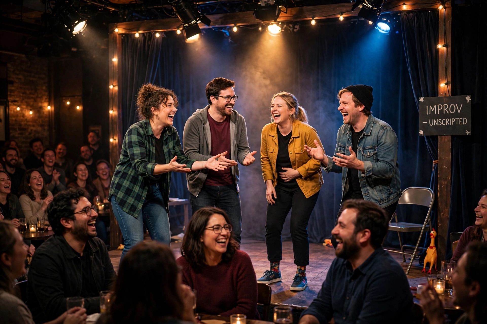

Improvisational theatre, often called improv, is a form of theatre, often comedy, in which most or all of what is performed is unplanned and created spontaneously by the performers, frequently in collaboration with the audience. In its purest form, dialogue, action, story, and characters are created collaboratively in the moment, without a pre-written script.
| Improvisational theatre | |
|---|---|
| Medium | Theatre |
| Types | Short-form, long-form, musical improv, improv comedy |
| Key figures | Viola Spolin, Keith Johnstone, Del Close |
| Notable troupes | The Second City, Upright Citizens Brigade, The Groundlings |

Improvised performance has roots in the Italian commedia dell'arte of the 16th century and in much older traditions of street performance. The modern form, however, is usually traced to the theatre games developed by Viola Spolin in Chicago in the 1940s and 1950s, and to Keith Johnstone's Theatresports in Canada and Britain. In the 1970s and 1980s, Del Close developed long-form structures such as the Harold with Charna Halpern at Chicago's iO Theater.
Improv training emphasizes listening, agreement, and spontaneity. The best-known principle is "Yes, and...", accepting a partner's offer and building on it. Other core concepts include establishing the who, what, and where of a scene (the "base reality"), playing at the top of one's intelligence, and "game of the scene" in long-form work.
Short-form improv consists of brief scenes and games, often driven by audience suggestions and constraints, popularized for television audiences by shows such as Whose Line Is It Anyway?
Long-form structures, such as the Harold, sustain interconnected scenes over 25 minutes or more from a single suggestion, and may shade into fully improvised plays and musicals.
Improv training grounds such as The Second City, The Groundlings, and the Upright Citizens Brigade have supplied generations of performers to sketch comedy and situation comedy, and improv techniques are widely used in corporate training, education, and therapy.